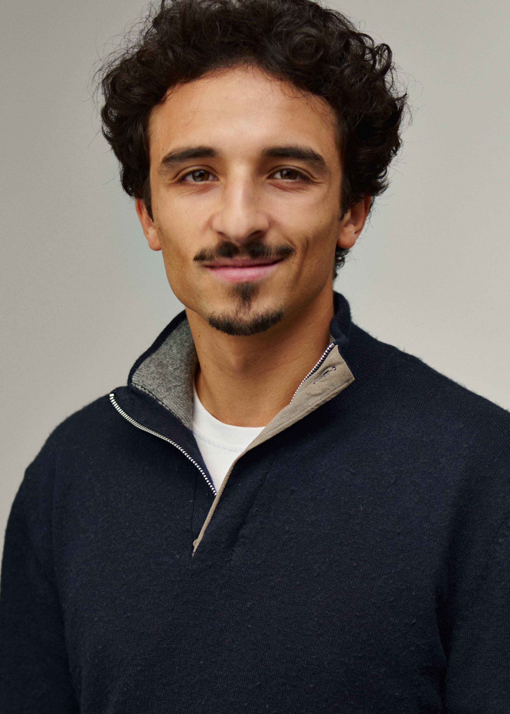

PhD Candidate in Economics
Université Libre de Bruxelles (ECARES)
Welcome! I am a PhD candidate in Economics at the European Center for Advanced Research in Economics and Statistics. My research focuses on urban economics and spatial inequality, with a particular interest in how cities develop, how neighbourhood change shapes the outcomes of residents within them, and how this in turn affects education outcomes and social mobility.
Prior to my PhD, I obtained two Master's degree and a Bachelor's degree in Economics from the Université Libre de Bruxelles.
I am currently a visiting researcher at the Department of Geography and Environment, London School of Economics (hosted by Professor Olmo Silva), where I use the MoJDfE linked dataset and the Longitudinal Education Outcomes (LEO) data to understand the short- and long-run consequences of gentrification on children in England.